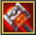
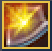

Exploradores são jovens fora-da-lei corajosos com um grande prospecto de oportunidades após o início da guerra. Quem iria querer pastorear
ovelhas e arar a terra quando se pode encontrar fama e ouro em terras distantes? Exploradores são capazes de ir a qualquer lugar do mundo e
enfrentar quaisquer perigos. Paladinos experientes cumprimentam a nova geração, mas mesmo admitem que aventureiros não chegam aos pés dos
Exploradores. E todo veterano inveja suas habilidades com as armas!
HABILIDADES:


Lancinante
Descrição: Um ataque que causa ao adversário dano físico equivalente a 20 unidades e 140% do poder físico do personagem.
Escudo de Harad
Descrição: Recebe o auxílio "Campo de Proteção" por 4 s. O efeito absorve uma certa quantidade de dano recebido. Aumenta em 2% as proteções física e mágica do personagem por 6 segundos após o término do efeito a cada 20% de dano absorvido da força máxima do escudo.
Inspiração
Descrição: Aumenta em 2% o parâmetro de penetração e em 5% o parâmetro de velocidade do personagem por 22 segundo(s).
Desaparecimento
Descrição: Torna o personagem invisível para adversários e aumenta em 15% a velocidade de movimento por 8s. Durante 2 s depois de aplicar a habilidade, o personagem não pode ser detectado nem ficar visível. Qualquer ataque enquanto está invisível tem 100% de chance de atordoar o inimigo por 1.5s. O efeito impede movimentos, ataques e o uso de habilidades. A habilidade não poderá ser usada durante o combate se houver adversários vivos a uma distância de pelo menos 8 metros do personagem.
Exacerbação
Descrição: Recebe o auxílio "Endurecimento" pela duração da habilidade. O efeito aumenta em 6.5% o parâmetro de força de ataque para cada adaga equipada e em 8% a força física para qualquer arma de duas mãos equipada. Cada ataque automático reduz em 15% a velocidade de movimento do inimigo por 3 s.